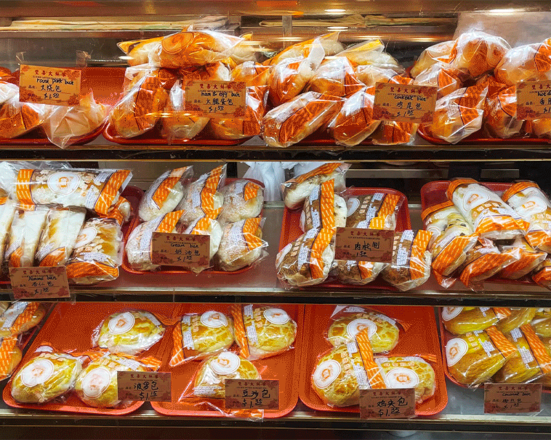

Chinese Bakeries
Stepping into a Chinese bakery, you’re instantly hit with the sweet smell of freshly baked buns and pastries.
You’ll find treats of all kind: baked, steamed, and fried, ranging from sweet to salty pastries.
Looking at the plentiful and various products that are shelved along the walls and inside the display cases, it may seem overwhelming at first glance.
So here is a comprehensive guide to knowing your way around a Chinese bakery the next time you find yourself craving something delicious.